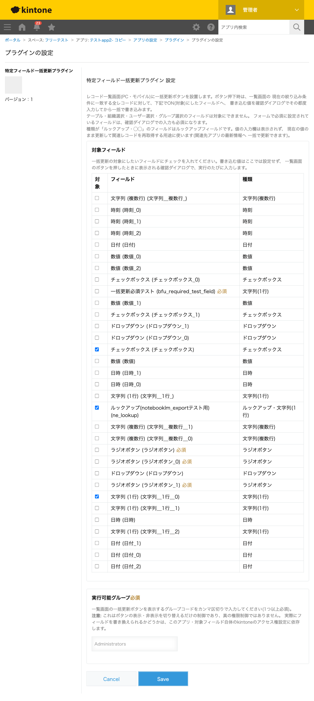

GovAppsプラグイン 安全性を確認できる無料kintoneプラグイン集
レコード一覧画面(PC・モバイル)のボタン押下で、設定画面でON(対象)にしたフィールドへ、 書き込む値を確認ダイアログでその都度入力し、一覧画面の現在の絞り込み条件に 一致する全レコードへ一括で書き込むプラグインです。複数フィールドをまとめて対象にでき、 フォームで必須に設定されているフィールドは確認ダイアログでの入力も必須になります。
一覧画面で条件を絞り込んだ状態でボタンを押すと、その絞り込み条件に一致するレコードだけが更新対象になります。確認ダイアログには絞り込み条件と対象件数が表示されるため、意図した範囲であることを確認してから実行できます。ステータスの一括変更、キャンペーン対象レコードへのフラグ一括付与など、条件に応じた一括編集作業に使えます。
設定画面で実行可能グループを指定すると、一覧画面のボタン自体を特定グループのメンバーにだけ表示できます(ただし表示・非表示の切り替えに過ぎず、実際の書き込み可否はアプリ・フィールドのアクセス権設定に依存します)。また、対象フィールドがフォームで必須に設定されている場合、確認ダイアログでの入力も必須になるため、必須項目を空欄のまま一括更新してしまうミスを防げます。
対象フィールドにルックアップフィールドを指定すると、確認ダイアログには値の入力欄が出ず、「現在の値のまま更新します」という注記だけが表示されます。実行すると、対象レコードのルックアップフィールドがそのままの値で書き戻され、kintone側の自動転記が再実行されて、コピー先フィールドが参照先アプリの最新の値へ一括で更新されます。参照先アプリのデータを更新したあと、こちら側のコピー先フィールドが古いままになっているレコードをまとめて最新化したい場合に使えます。
一覧画面で絞り込みたい条件を設定してからボタンを押すと、対象レコード数・現在の絞り込み条件・対象フィールドごとの「更新する」チェックボックスと入力欄を示す確認ダイアログが表示されます。今回更新しないフィールドはチェックを外せば既存の値のまま変更されません。ルックアップフィールドは値の入力欄が無く、「現在の値のまま更新します」という注記だけが表示されます(実行するとコピー先フィールドが関連レコードの最新値へ再取得されます)。値を入力して「次へ」を押すと、確定した内容を見直せる最終確認ダイアログが表示され、「実行」を押すと対象レコードへ一括で書き込まれます。完了後に対象件数・成功件数・(リビジョン競合による)スキップ件数が表示されます。対象レコードが0件の場合はダイアログを出さず、その旨だけを通知します。
kintoneセキュアコーディングガイドラインに沿って実装時にチェックしています。特に重要な点は次のとおりです。
POST/GET /k/v1/records/cursor.json)を使い、書き戻しはPUT /k/v1/records.jsonを100件ずつのバッチで送信します。バッチ全体が失敗した場合のみ1件ずつの個別送信にフォールバックし、リビジョン競合(他ユーザーによる同時編集)が起きたレコードだけをスキップして他のレコードの処理は継続します。REST API呼び出しはすべてkintone.api()(kintone自身への呼び出し専用の内部ラッパー)経由で、外部サーバーへの通信は一切行いません。kintone.app.getFormFields()/kintone.app.getQueryCondition()のJavaScript APIを使用しています。kintone.user.getGroups())は、あくまでUI上の表示・非表示を切り替える機能であり、真の権限境界ではありません。実際に書き込みできるかどうかは、対象アプリ・対象フィールド自体のkintone標準のアクセス権設定に委ねられます(設定画面にも明記しています)。textContent/createElementのみで組み立てており、ユーザー入力(絞り込み条件・書き込む値)をHTML要素として出力することはありません。詳細な確認項目・確認日は下記GitHubのチェックリストに全項目を掲載しています。

このプラグインは、一覧画面のボタンを押すたびに、対象レコードを列挙するレコードカーソルAPI
(POST/GET/DELETE /k/v1/records/cursor.json)を実行し、
確認ダイアログで実行を確定すると、続けて対象フィールドへの書き戻し(PUT /k/v1/records.json、
100件を超える場合は複数回、リビジョン競合時は個別送信PUT /k/v1/record.jsonへ
フォールバック)を実行します。確認ダイアログの表示のみで実行をキャンセルした場合は、
カーソル作成(件数確認用)の1回のみでレコード本体の取得・書き戻しは行われません。